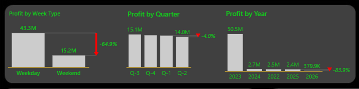

Dashboard Highlights


Detail: Setting the Scene and Unveiling the Purpose:
Imagine NovaMed Solutions as a pioneering ship navigating the vast ocean of the pharmaceutical industry, delivering essential drugs to customers worldwide. This Top/Bottom Analysis dashboard is our captain's log, chronicling the company's performance across key dimensions like time, products, customers, and geography. The purpose behind this data isn't just to tally numbers; it is to reveal the "why" driving success or setbacks. Why do some areas generate towering profits while others barely stay afloat? By dissecting top performers, the peaks that propel growth, and bottom performers, the valleys signalling risks, we uncover actionable truths. These insights empower leaders to optimise resources, mitigate weaknesses, and steer toward sustainable expansion. At its core, the data tells a story of efficiency and opportunity. With a total profit of £58.5M from £71.3M in revenue, NovaMed demonstrates strong fundamentals, but hidden patterns in the numbers highlight where strategic adjustments could unlock even greater potential. Let's dive into the voyage, section by section, to decode the meanings and draw insights.
Data Dictionary
The data dictionary includes three datasets:
- Customer_Table: This dataset contains customer information, including the customer ID, which is unique to each customer. FirstName, LastName, Age, Gender, Country, OtherCustomerInf, indicating whether the customer is new, frequent, or preferred. And also the Images, with file paths to images related to the customer.
- Drug_Lookup: This is a product sales record, and each row represents one drug, and each column describes a different property of that drug. The first column is the DrugID, which is a unique identifier used to identify a drug in the database. The second column is Regulatory_ComplianceID, which is also a unique identifier from the regulatory or compliance authority. The third column is the DrugName, then followed by the UnitSalesPrice, CostOfProduction, and lastly the Treats column, which talks about the illness, infection, or medical condition the drug is intended to treat.
- Fact_Table: This dataset contains sales transactions, starting with the SalesID, followed by the DrugID, then the CustomerID, UnitSold, Sales_Date, and Buyer_Type, which segments sales between wholesale and retail buyers.
Navigating the Depths and Exploring the Data, Meanings, and Insights
Our journey begins with the overarching metrics, the compass guiding the entire operation. NovaMed has moved 269K units, incurring a modest Cost of Goods Sold (COGS) of £13M while generating £71.3M in revenue. This culminates in a robust £58.5M profit and an exceptional 82% profit margin. The meaning here is clear: pharmaceuticals offer high markups, and NovaMed excels at controlling costs, likely through efficient supply chains or premium pricing on life-saving drugs. Yet, the insight is twofold: this high margin (far above industry averages of 20-40% for generics) signals a competitive edge in branded or speciality meds, but it also warns of vulnerability to cost inflation or regulatory changes. To sustain this, the company should prioritise supplier diversification and innovation in high-margin products.
Sailing into time-based performance, we first examine profit by week type. Weekdays dominate with £43.3M in profit, dwarfing weekends at £15.2M, a staggering 64.9% decline.
Next, quarterly profits show subtle shifts: Q3 at £15.1M dips slightly to £14.0M in Q4 (a 4.0% drop), with earlier quarters (Q1 and Q2) hovering around similar levels based on bar heights. This pattern suggests seasonal influences, perhaps holiday slowdowns or end-of-year budget constraints in healthcare spending. The meaning behind these numbers is operational predictability: small fluctuations indicate stable demand, but the Q4 dip could stem from inventory stockpiling or delayed reimbursements. Insight: Forward-planning is key; implementing predictive analytics for quarter-end surges could smooth revenues and prevent minor dips from compounding. 
Zooming out to yearly profits paints a more dramatic picture: 2023 towers at £50.5M, but 2024 plummets to £2.7M, followed by £3.5M in 2025.
Monthly revenue and profit trends add granularity, with a fluctuating line chart averaging £5-6M per month (e.g., peaks at £6.8M in January and July, lows around £5.0M in February and August), ending with a -£1.80K dip and overall -2.9% change. These oscillations likely mirror healthcare cycles, higher in allergy/flu seasons, lower in summer lulls. Consistent monthly inflows ensure cash flow stability, but negative shifts highlight sensitivity to external events like supply disruptions. Insight: By correlating these with global health trends, NovaMed can forecast better, stocking up for high-demand months to minimise losses and capitalise on predictable upswings.
Shifting to product performance, the drug ranking (set to "Top" in the dropdown) spotlights performers by revenue: Doxycycline, Ergocalciferol, and Lisinopril each at £3.5M, with Clonazepam at £3.1M. The numbers signify these drugs contribute majourly to the £71.3M revenue pie, dragging overall growth.
Customer type weekly performance reveals daily dynamics across preferred, new, and frequent buyers. For preferred customers, profits vary wildly. Why these patterns? Customer behaviours tied to workweeks, preferred (loyal) thrive on routine orders, while new ones incur onboarding costs, leading to losses. The meaning: daily negatives erode the 82% margin, signalling inconsistent engagement or promotional timing issues.
Finally, geographic profit by country maps our global footprint: Canada leads at £26M, Australia at £13M, Germany at £6M, and the US, France, and UK tied around £5M each. The world map reinforces this, with the most enormous bubbles in North America and Europe, smaller ones in Asia and Africa.
Why this distribution? Strong healthcare infrastructure and reimbursement policies in Canada/Australia fuel profits, while fragmented markets in the US (e.g., insurance complexities) cap gains. The numbers mean NovaMed is regionally concentrated, with over half the £58.5M profit from just two countries.